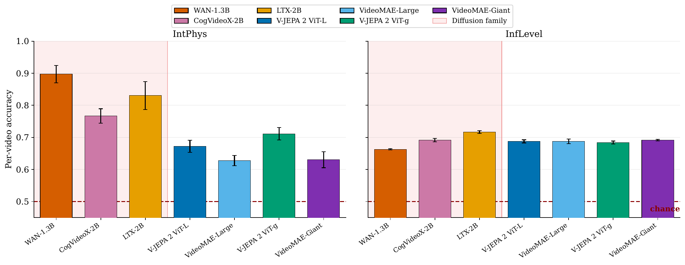
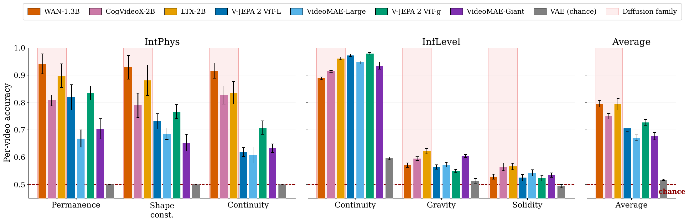
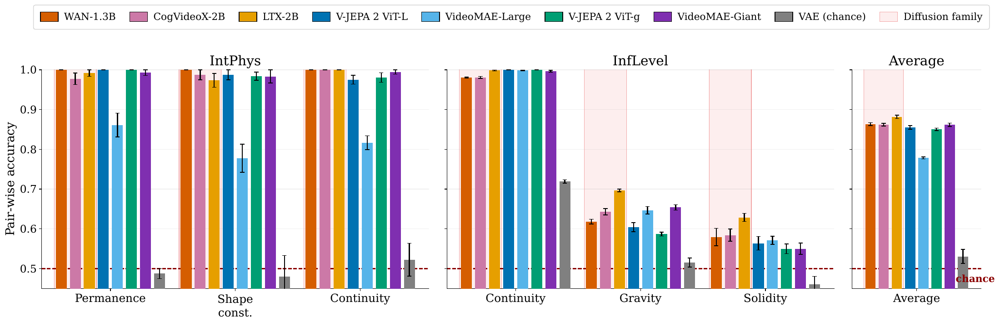

Key result
Intuitive physics is not unique to V-JEPA-style encoders: video diffusion models have it too
The evidence so far for intuitive physics in video models comes from self-supervised encoders such as V-JEPA, trained to predict masked parts of a video in representation space. Video diffusion models are trained for something else entirely: generating video. Yet linear probes on their hidden states separate plausible from implausible clips as well as, and often better than, V-JEPA 2 and VideoMAE, including their largest ViT-g and Giant versions.
On IntPhys, all three diffusion models score above every encoder; on InfLevel, the two families are on par. Physical structure is not the product of one training objective. It also emerges from learning to generate.





